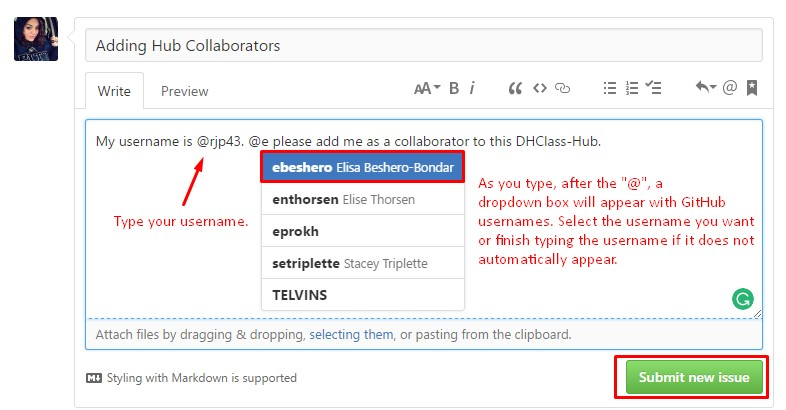

Step By Step
Begin by navigating to our tutorial and following the steps under Let's Get
Started
to create a GitHub account and download Git Shell. Do not rush through this process and be sure to
read thoroughly.
Once you have completed the above tasks navigate to our DHClass-Hub repository. First read through the README.md file that displays at the bottom of the repo. This is a general welcome to the DHClass-Hub and details the basic workflow of using this repo.
In order for you to contribute to the DHClass-Hub we will need to add you as a
collaborator. This is the perfect moment to create and/or comment on a GitHub issue.
Navigate to the DHClass-Hub GitHub page. At the top of the page, under
ebeshero/DHClass-Hub
you will see a tab that says Issues
. In our
DHClass-Hub Issues Board notice there are open issues and closed issues.
Search through the open issues for an issue where others are asking to be added as a
collaborator using keywords like collaborator
or add to sandbox
in the
search bar. If there is such an issue already existing click on it to create a
comment. If there is not an existing issue click the New issue
button at the
top of the page.

As mentioned in our tutorial section GitHub as Social Media
, issues and their comments are
written in markdown language. GitHub offers a comprehensive guide to writing markdown that you should reference as you find the
necessity to create and comment on issues (especially when you want you to include
segments of code). For the purposes of this assignment though you will only need to
create an issue with the title Adding Hub Collaborators
and/or comment in
such an issue with your GitHub username (i.e. Dr.
Beshero-Bondar's username is ebeshero). Along with your
username, also type the @ symbol followed by Dr. Beshero-Bondar's
username this will notify her to add you. In future issue comments use the
@ and specify any GitHub user by their username and this will send
an email or push notification to the user leading them to your comment as well as
leave a link to their profile for the instances that you may be trying to designate
credit to them. Your issue comment for this assignment should resemble this:

We will be monitoring the issue board to add collaborators as they come in. As you
wait for us to add you, take some time to read our Welcome to the Issues
Board
issue and our Troubleshooting-Readme
(which explains how to use the Troubleshooting folder in our
DHClass-Hub).